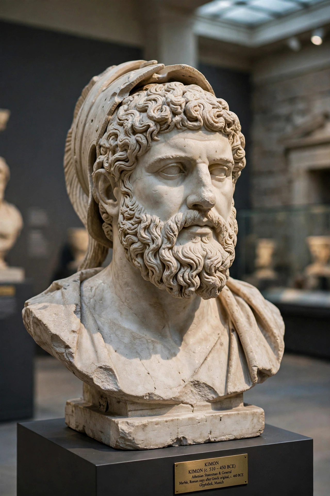

| Cimon | |
|---|---|
 | |
| Born | c. 510 BCE, Athens |
| Died | c. 450 BCE, Citium, Cyprus |
| Occupation | Statesman and general (strategos) |
| Father | Miltiades the Younger |
| Known for | Battle of Eurymedon; leadership of the Delian League |
Cimon (Greek: Κίμων; c. 510 – c. 450 BCE) was an Athenian statesman and general, the dominant figure in Athens in the decades after the Greco-Persian Wars and a leading commander of the Delian League. The son of Miltiades, victor of Marathon, Cimon combined military brilliance against Persia with a conservative, pro-Spartan politics at home that eventually brought about his ostracism.
Cimon distinguished himself at Salamis (480 BCE) and, with Aristides, helped found the Delian League in 478/477 BCE, whose fleet he commanded for most of the next two decades. He expelled the Persians from Eion and Scyros — from the latter, legend says, he recovered the bones of the hero Theseus and brought them to Athens — conquered the Chersonese, and crushed the revolt of Naxos, the first ally reduced to subject status. His masterpiece was the Battle of the Eurymedon (c. 466 BCE) in Pamphylia, where on a single day he destroyed a Phoenician fleet and then defeated the Persian army ashore, a double victory that effectively ended the Persian threat to the Aegean. He later reduced rebellious Thasos (465–463 BCE).
At home Cimon was the leader of the aristocratic faction against the democrats Ephialtes and the young Pericles. Famous for generosity — he opened his estates' produce to all comers and funded public works, including the planting of the Academy and works on the Acropolis — he pursued a philo-Laconian policy of friendship with Sparta. In 462 BCE he led 4,000 Athenian hoplites to help Sparta crush the helot revolt on Mount Ithome; the Spartans, fearing Athenian democratic sympathies, dismissed them alone of the allies. The humiliation destroyed Cimon's position: Ephialtes stripped the Areopagus of its powers, and in 461 BCE Cimon was ostracised for ten years.
Recalled early — tradition says at Pericles' own motion — Cimon negotiated a five-year truce with Sparta (451 BCE) and sailed with 200 ships to Cyprus and Egypt to renew the war on Persia. He died, of illness or wounds, during the siege of Citium in Cyprus (c. 450 BCE). The "Peace of Callias" with Persia (c. 449 BCE) is traditionally associated with his final campaign. Plutarch's Life of Cimon, paired with Lucullus, is the main source for his career.
See also: Delian League · Pericles · Greco-Persian Wars · Sacred Band of Thebes